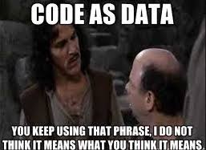

Whatever you background, Clojure is almost guaranteed to affect
the way you think about programming.
- Eli BenderskyI’ve been meaning to start a series on Clojure for quite a while now. I started exploring functional programming around June, 2019 and stumbled upon this language. I sure had my doubts on how impactful it might be. However, I was quite shocked with the pleasant development experience. The elegant integration with emacs and the joy of using REPL are all something that keeps me enganged in exploring clojure more and more everyday. I can keep going but first, let’s dig into the background of Clojure so that we don’t get lost right at the beginning.
A language that doesn't affect the way you think about programming,
is not worth knowing.
- Alan PerlisWhat is clojure?
- A functional programming language.
- A complied language. Yet dynamic in nature i.e., clojure features are also supported at runtime.
- Values built-in data structure philosphy. That is, it provides built-in support for map, vector, hash-map, list etc.
- Provides persitent data structures that essentially focuses on immutability and multi-threading.
- Shares code as data philosphy with a macro system.
For those of you who know, it’s a LISP! Don’t get confused now. Being a lisp does not mean it can’t be used to build production ready softwares. It’s fairly important to understand that clojure comes with a lot of features alongside being a lisp.
Having said that, clojure provides a very powerful support for interfaces. These interfaces are called protocols and discourages thinking in terms of classes with inheritance. It supports multiple dispatch functions as well. Clojure also provides a great support for concurrency and parallelism in multiple ways.
Code as data
Let’s consider the follwing block of code. By the looks of it, anyone can say that it takes two arguments, x and y and returns the addition of the two.
(defn add
[x y]
(+ x y))Hold your horses. Let’s take a close look and try to understand the way it can be interpreted. In the above code,
- x and y are symbols. A symbol is basically an object representing a name. These are first class names in Clojure.
- [x y] is a vector containing the symbols.
- (+ x y) is a linked list data structure containing two symbols x and y.
From the above, I want to infer that when we talk about any piece of clojure code, * We talk about a code that will execute. * We think of it as a data structure consisting of vectors, maps, intergers, strings etc.
In computer programming, this is called Homoiconicity. Clojure is said to be homoiconic. In simple terms, it is said to share code as data philosphy. Code forms are data structures and data structures can be thought of as forms and executed as code.

We’ll look at some basic terms before diving deep into web programming.
Functions
Creating and using functions, and creating functions that use functions, is what Clojure programers do. Clojure has a number of ways to create a function. I’ll give an overview on some of them.
(def print-string
(fn [] "That's cute. What else clojure is capable of?"))
=> #'user/print-string
(print-string)
=> "That's cute. What else clojure is capable of?"def is used declare a variable. fn creates a simple function object. It can be stored in a var, passed to functions etc. defn is a macro that makes defining functions a little bit simpler. The above can be written as:
user> (defn print-string
[]
"That's cute. What else clojure is capable of?")
=> #'user/print-string
user> (print-string)
=> "That's cute. What else clojure is capable of?"We can also overload arity in a single function, self-reference it.
user> (defn sum
([x] x)
([x y] (+ x y))
([x y z] (+ x y z)))
=> #'user/sum
user> (sum 1)
1
user> (sum 1 2)
3
user> (sum 1 2 4)
7REPL
This stands for Read-Eval-Print-Loop. The REPL reads in text through the reader and further transforms it into a Clojure data structure. We can imagine REPL as our playground where we can test running code or even try out new ideas.
The reason it is such a fantastic feature is because of the feedback loop which tremendously enhances development cycle. This kind of feature is not available for most languages. We’ll see the power of REPL in further sections. You can also read more about REPL here.
Pure functions
These are functions that will always produce the same result for a given input. These cannot have any observable side effects and don’t depend on any kind of outside state, other than that which was given as arguments to the function. The result of such functions don’t change during the execution of the program or between executions of the program, as the dependency on outside state can lead to changes in the result of the function.
Side effects are observed application state change outside a function
user> (defn product
[x y] (* x y))
=> #'user/sum
user> (product 1 2)
2The above function product will always result the same for a fixed x and y. Even the examples above where we discussed multi arity were pure functions.
But,
user> (def principal 1000)
=> #'user/amount
user> (defn interest
[time rate] (/ (* principal time rate) 100))
=> #'user/interest
user> (interest 10 5)
=> 50000The above function interest is not a pure function as it depends on a variable principal. If it changed, interest would produce a different result for the same time and rate. These are called impure functions.
Keywords
According to Clojure documentation, keywords can be described as symbols that evaluate to themeselves.
user> :foobar
=> :foobar
user> (keyword? :foorbar)
=> true
user> (keyword 100)
=> nilDon’t worry about the functioning of keyword? right now. You can perhaps go through cheatsheet that has various built-in functions listed categorically. What I would like you to understand is that keywords provide a very fast equality test. And also these are the keys of a hashmap in clojure.
user> (def sample-map {:a 1 :b 2})
=> #'user/sample-map
user> sample-map
=> {:a 1, :b 2}
user> (:a sample-map)
=> 1Collections and Sequences
There a lot of operations over collections and sequences provided by clojure. But before diving into those operation, we need to understand the difference between a sequence abstraction and a collection abstraction.
Every sequence is a collection, but not every collection is a sequence.
The collection abstraction is closely related to the sequence abstraction. All of Clojure’s core data structures — vectors, maps, lists and sets — take part in both abstractions. The main difference is that sequence is about operating on the individual element that is expected to be accessed in linear fashion whereas collection is more about the overall data structure.
user.core> (def foo '[1 2 3 4])
=> #'user/foo
user.core> foo
=> [1 2 3 4]
;; An individual element can't be empty.
;; Only the whole data structure can be emtpty.
;; Therefore, when we talk about collections we
;; are more so referring to the data structure as whole
user.core> (empty? foo)
=> falseThis stackoverflow answer can be helpful in getting the overview easily.
Starting a simple project
This section focuses on generating an outline for a simple clojure project (not for web programming). We will use Leiningen as our tool to automate any sort of clojure project throughout the series. There are others such as boot but we will focus on lein.
To generate a project skeleton, a simple lein command can do the trick:
lein new app clojure-firstThis should genetate a structure as follows:
├── CHANGELOG.md
├── LICENSE
├── README.md
├── doc
│ └── intro.md
├── project.clj
├── resources
├── src
│ └── clojure_first
│ └── core.clj
├── target
└── test
└── clojure_first
└── core_test.cljTo run the project,
lein runThis command successfully runs because there is a -main function in src/clojure_first/core.clj which is the entry point for the app. Remove that and you might end up setting your hair on fire. Well, to ensure that doesn’t happend we depend on lein.
To try out repl, you can run
lein replConclusion
In this post we figured out:
- What is clojure?
- Clojure philosphy.
- Basic terms related to clojure.
- Starting a simple clojure project.
I’m not going to debate on what editor you should and should not use. But I highly recommend one of the follwing:
- Emacs + cider
- IntelliJ + Cursive
Both of the above are the most used development environment for clojure. I personally use spacemacs (an emacs flavour) for clojure development.
In the next post we’ll setup a web project and try to understand it’s working.